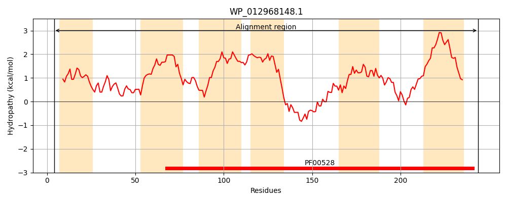
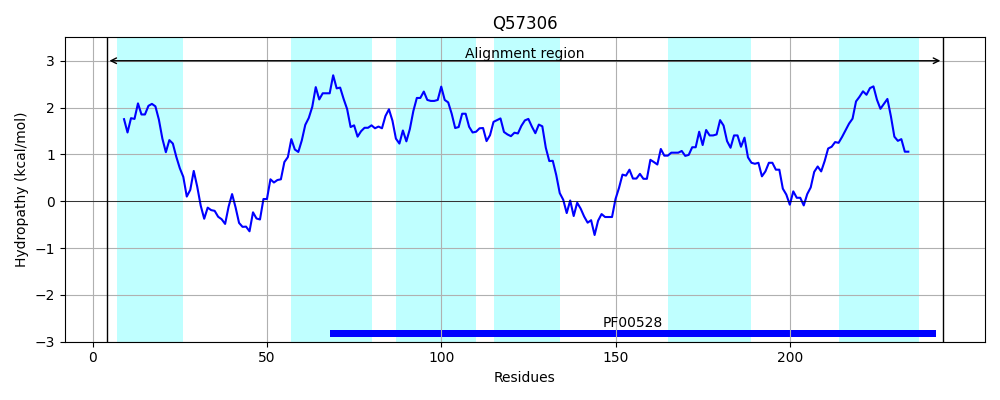
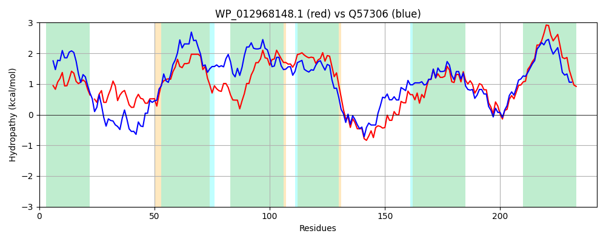

Hit Accession: Q57306
Hit TCID: 3.A.1.17.3
Hit Description: gnl|BL_ORD_ID|14181 gnl|TC-DB|Q57306|3.A.1.17.3 Probable ABC transporter permease protein HI0355 - Haemophilus influenzae.
Mach Len: 242
e:0.000000
Query TMS Count : 6
Hit TMS Count: 6
TMS-Overlap Score: 6.600000
Predicted Substrates:CHEBI:8675;pyrimidine
BLAST Alignment:
Score: 613 , Bit scores: 240 bits, E-value: 3.3e-80, Alignment length: 242, Percentage identity: 51
Query: 4 RLWRGGMVFCGLMILWGLASRSG-IPHFLLPSPMAVAEALWVNRAYLGWHTLITLSEILSGLALGVTLGVTLALGMILSPRLQRWLMPLVLTSQAIPVFALAPLLVLWLGFGMSAKVAMAVLVIFFPVTSAFFDGLRRVNQEYLDLARSMNASFGAQLRHVRLMAALPALGSGLRMAAAVAPIGAIIGEWVGSAEGLGYVMLNANARLQTDICFAALFILVLLTLLLWLAVDTLLHRLIDWS 244
RL + ++ L+++W + + G PH++ PSP AV + L+ + L HT +TL EI GL LG G+ AL + S ++ L+P+++ SQAIPVFA+APLLVLW G+GM++K+ M+VL+I+FPVT+A +DGLR Q +LDLA++ N S L VRL AALPA SGLR+A +VAPIGA++GEWVGS+EGLGY+M++ANAR+Q D+ FAAL ILV ++L L+ ++D LLHR I WS
Sbjct: 4 RLLKPLLIVGVLLMIWQMVATLGSFPHYIFPSPQAVRQQLFTHAELLWQHTQVTLLEICLGLLLGFLFGLISALLLSFSRQISAVLLPILVISQAIPVFAIAPLLVLWFGYGMASKIVMSVLIIYFPVTAACYDGLRNTPQAWLDLAKTFNISPLRLLLKVRLPAALPAFASGLRIAVSVAPIGAVVGEWVGSSEGLGYLMIHANARMQVDLMFAALLILVSISLCLYFSIDWLLHRFI-WS 244 | Protein Hydropathy Plots: |
|---|
|  |  |
Pairwise Alignment-Hydropathy Plot:
|
|---|
|  |